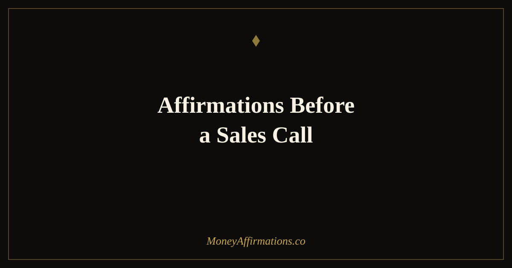

50 Affirmations Before a Sales Call to Show Up With Confidence and Service

The best salespeople are not the most persuasive — they are the most present. They walk into a conversation genuinely focused on the person they are talking to rather than on whether they will close the deal. That orientation — service over sales — is not a technique. It is a mindset state. And like all mindset states, it can be deliberately cultivated before a call, not just hoped for.
Pre-call anxiety is extremely common in sales, even among experienced professionals. The fear of rejection, the pressure of targets, the worry about saying the wrong thing — all of it lives in the nervous system and shows up in how you sound on a call. Affirmations before a sales call address that anxiety at its root by shifting your internal focus from "will they say yes?" to "how can I genuinely help this person?" That shift is worth more than any script, and this ritual is designed to create it in under fifteen minutes.
What are sales call affirmations?
Sales call affirmations are present-tense statements used immediately before a sales conversation to move your internal state from performance anxiety into genuine service orientation. They differ from general sales confidence affirmations in that they are situational and immediate — designed to be used in the minutes before a specific call rather than as a daily ongoing practice.
Their purpose is to clear the psychological noise that degrades call quality: the fear of rejection, the pressure of quota, the self-consciousness that makes you sound scripted rather than human. By replacing those mental patterns with affirmations focused on your value, your prospects' needs, and your calm confidence in handling objections, you create the conditions for a conversation that is both more effective and more enjoyable. When you stop trying to close and start trying to serve, closings follow naturally.
50 affirmations before a sales call
The best sales calls feel like conversations, not pitches. This sequence is designed to move you from pre-call nerves into genuine service energy — where you are more focused on the person you are talking to than on whether they say yes.
5 minutes before — clear your energy and calm your nerves
- I am calm, clear, and completely ready for this conversation.
- I release all pressure and show up as my most natural, confident self.
- My nerves are transforming into focused, positive energy right now.
- I am fully present for the person I am about to speak with.
- I breathe deeply and my mind becomes clear and open.
- I do not need this call to go perfectly — I need it to be genuine.
- I let go of outcomes and focus only on this conversation.
- I am grounded, settled, and ready to listen as much as I speak.
- Everything I need to show up well is already in me.
- I step into this call with warmth, confidence, and complete presence.
Your value and what you genuinely offer
- What I offer has genuine, measurable value for the right person.
- I believe in what I am selling because I know what it does for people.
- I am knowledgeable, credible, and trustworthy in this conversation.
- My expertise is real and it comes through naturally when I speak.
- I communicate the value of what I offer with clarity and conviction.
- I am a professional who respects both my time and my prospect's time.
- My confidence comes from preparation and genuine belief — not from performance.
- I represent something I am proud of and that pride is felt on every call.
- I bring insight and perspective to this conversation that the prospect genuinely benefits from.
- I am exactly the right person to have this conversation right now.
For the prospect — serving, not selling
- My whole focus in this call is on understanding what this person actually needs.
- I listen more than I talk and I learn something valuable from every conversation.
- I genuinely care about whether this solution is right for this person.
- I ask great questions and I give the answers the space they deserve.
- I am here to help, and that intention comes through in everything I say.
- I do not push people toward a decision — I help them make the right one.
- Every prospect deserves my full attention and my honest assessment.
- I make people feel heard, understood, and respected in this conversation.
- My job is to create clarity, not urgency.
- When I focus on serving, the right outcomes follow naturally.
For handling objections with calm and clarity
- Objections are not rejection — they are questions in disguise.
- I welcome pushback because it tells me exactly what this person needs to hear.
- I stay calm and curious when someone raises a concern.
- I have answers that are honest, clear, and genuinely address what is being asked.
- I do not argue — I understand first, then I respond.
- Every objection I handle well deepens the trust in this conversation.
- I am not rattled by hesitation — I am interested in what is underneath it.
- I speak to the real concern, not just the surface words.
- I handle objections with confidence because I know this product and I know how to help.
- I turn uncertainty into clarity with patience and genuine care.
For closing with confidence and integrity
- I ask for the next step with directness and ease.
- I make it simple and clear for the right person to say yes.
- I close without pressure because my confidence comes from belief in the value, not in desperation for the sale.
- I honour every no with grace and leave every door open with respect.
- I am building a reputation for integrity and that reputation grows with every call.
- Whether this call converts or not, I give it everything I have while I am in it.
- I follow through on every commitment I make in this conversation.
- I earn trust by being honest about what I can and cannot deliver.
- I close today's call proud of how I showed up, not just whether I won.
- I am becoming a better, more confident salesperson with every single conversation.
How to use these affirmations
The pre-call ritual works best when it is short and consistent rather than long and sporadic. If you have a block of sales calls scheduled for the morning, read through the full sequence once before you begin — that sets your state for the session. Then, for each individual call, take sixty seconds with group one to clear and centre yourself before you dial.
Read each affirmation slowly and with full attention. The goal is not to get through all fifty as quickly as possible — it is to let each statement land in your body, not just pass through your eyes. If a particular affirmation feels hollow or forced, that is the one to pause on. The resistance you feel is pointing directly at the belief that needs the most work.
Groups three and four — the service and objection-handling groups — are worth keeping open during a call block as reminders. If you find yourself getting attached to outcomes or frustrated by objections mid-session, re-reading group three for thirty seconds will reset your orientation faster than any pep talk. The ritual is not only for before the first call — it is a tool you return to throughout the day.
The neuroscience of sales confidence — why mindset beats technique every time
Every sales call carries a degree of social risk — the possibility of rejection — and the human brain is exquisitely sensitive to social risk. The amygdala, which processes threat responses, does not distinguish between physical danger and social rejection. A prospect saying "not interested" can activate the same stress hormones as a genuinely threatening situation. This is why experienced salespeople still feel pre-call anxiety: it is neurological, not a sign of weakness.
What separates high performers is not the absence of that threat response but the speed of their recovery from it — and their ability to prevent it from hijacking the call itself. Research from Albert Bandura on self-efficacy shows that people with strong beliefs in their own capability approach challenging tasks with more persistence, recover more quickly from setbacks, and maintain higher performance under pressure. Affirmations before a sales call build exactly this kind of domain-specific self-efficacy.
The service versus sales orientation distinction is backed by research too. Studies on salesperson motivation consistently show that service-oriented salespeople — those focused primarily on understanding and meeting customer needs — outperform sales-oriented ones over the long term, especially in complex or high-consideration sales. The mindset shift from "will they buy?" to "can I help them?" is not just ethically appealing — it is measurably more effective.
Dopamine also plays a crucial role in persistence. Each successful conversation — even a call where the answer was no but you showed up well — can trigger a small dopamine reward when you frame it as a win. Affirmations in group five are designed to create exactly that reframe, training your brain to stay motivated across long call days rather than depleting under repeated rejection.
Tips to make them work faster
- Stack with physical ritual: Pair the pre-call affirmations with a consistent physical action — standing up, putting on headphones, taking three deep breaths. The physical anchor becomes a conditioned trigger for the confident state, so eventually the physical action alone starts shifting your energy.
- Record yourself: Read the group one affirmations into a voice memo and play it back before high-stakes calls. Hearing your own voice say them creates a different quality of belief than reading silently — particularly for statements about your credibility and expertise.
- Focus on group three for marathon call days: When you are running ten or fifteen calls in a row, service-orientation is the hardest thing to maintain. Re-reading group three between calls takes ninety seconds and keeps you from slipping into autopilot performance mode.
- Personalise one statement per call: Before each call, modify one affirmation in group two to reference something specific about this particular prospect — their industry, their known challenge, or their stage of the buying process. Specificity sharpens presence.
- Debrief with group five: After every call — not just difficult ones — take thirty seconds with the closing group. This builds the habit of self-appreciation for showing up regardless of outcome, which is the single most protective factor against sales burnout.
Frequently asked questions
How is this different from affirmations for sales confidence?
Affirmations for sales confidence are a general, ongoing mindset practice — they are designed to be used daily to build your baseline belief in yourself as a salesperson over weeks and months. Affirmations before a sales call are a specific pre-call ritual — designed to be used in the five to fifteen minutes immediately before a specific conversation to shift your state from anxious or neutral into grounded, service-oriented presence. Both practices are valuable and they work best together. Think of sales confidence affirmations as the training and pre-call affirmations as the warm-up.
What if I genuinely do not believe in what I am selling?
If you truly do not believe your product or service helps people, affirmations will not fix that — and they should not. The affirmations in groups two and three are built on the premise that what you offer has genuine value. If you are struggling to feel that belief authentically, that is important information about either the product or how it is being positioned. Affirmations work best when they are amplifying a truth you already partially believe, not constructing one from scratch. If product belief is the issue, no mindset tool replaces an honest look at whether this is the right thing to be selling.
How many affirmations should I say right before a call?
For the five minutes immediately before a call, focus only on group one — the 5-minutes-before group. Ten statements, said slowly, with full attention on each one. That is enough to meaningfully shift your state without turning the practice into a lengthy ritual that makes you late. If you have fifteen minutes, add group two as well. The full sequence is best spread across your morning or the hour before a block of calls — not crammed into the sixty seconds before you dial.
Sales confidence is built call by call, conversation by conversation. The mindset you bring to each one compounds over time — into a reputation, a close rate, and a relationship with your own earning potential. Explore the full money affirmations collection to build financial confidence beyond the sales floor, and see our dedicated guide to affirmations for sales confidence for the longer-term daily practice that powers this pre-call ritual.